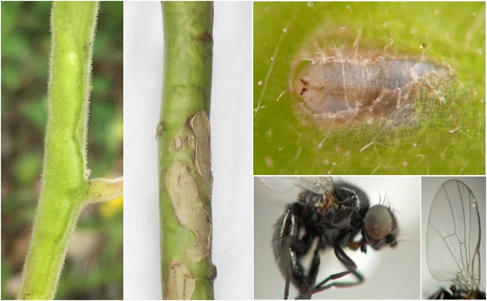

Stem miner (Diptera: Agromyzidae) in Abutilon
| Record no.: | 0001 |
|---|---|
| Feeding guild: | Stem miner |
| Taxonomy: | Diptera: Agromyzidae: Ophiomyia abutilivora |
| Stages observed: | trace, puparium, adult |
| Hosts in Abutilon: | A. theophrasti (buttonweed) |
The larva mines shallowly in the stem, creating blister-like raised patches of mined tissue that may split, scar, and/or become distorted. The puparium is formed just under the stem epidermis, and it may be partially exposed if the epidermis splits open. After the adult emerges, the empty puparium is a pale whitish color. Adults I reared, which were confirmed as O. abutilivora (Eiseman et al. 2021), emerged in late July.

 Prev
Prev
{kind=link}
- Eiseman, C.S., Lonsdale, O., van der Linden, J., Feldman, T.S., and M.W. Palmer. 2021. Thirteen new species of Agromyzidae (Diptera) from the United States, with new host and distribution records for 32 additional species. Zootaxa 4931(1): 1–68.[return to in-text citation]
Page created: February 9, 2026. Last update: none